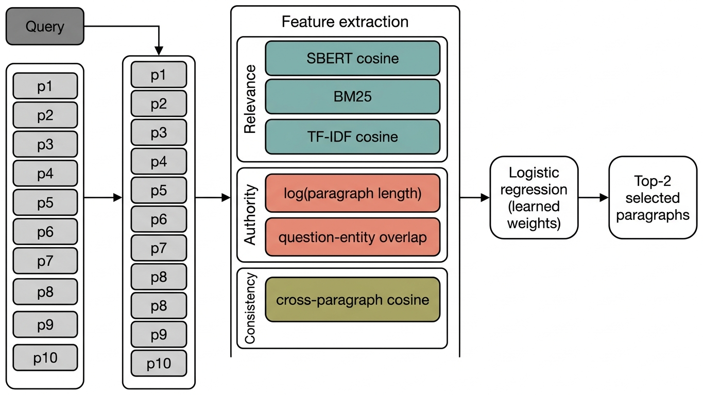
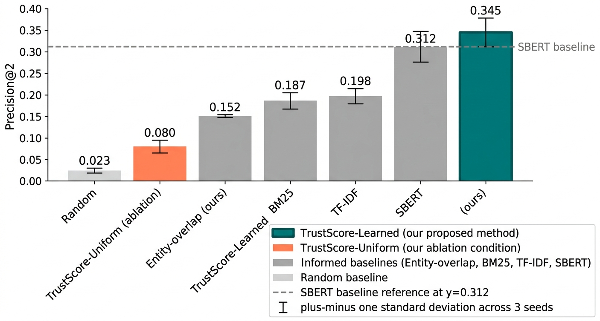
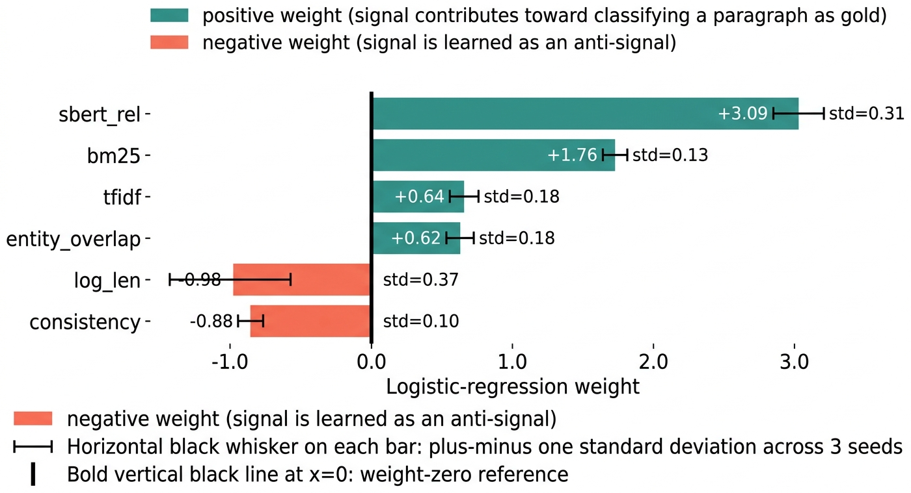
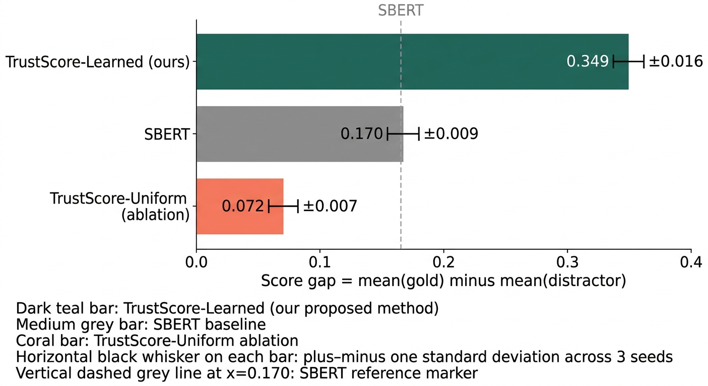
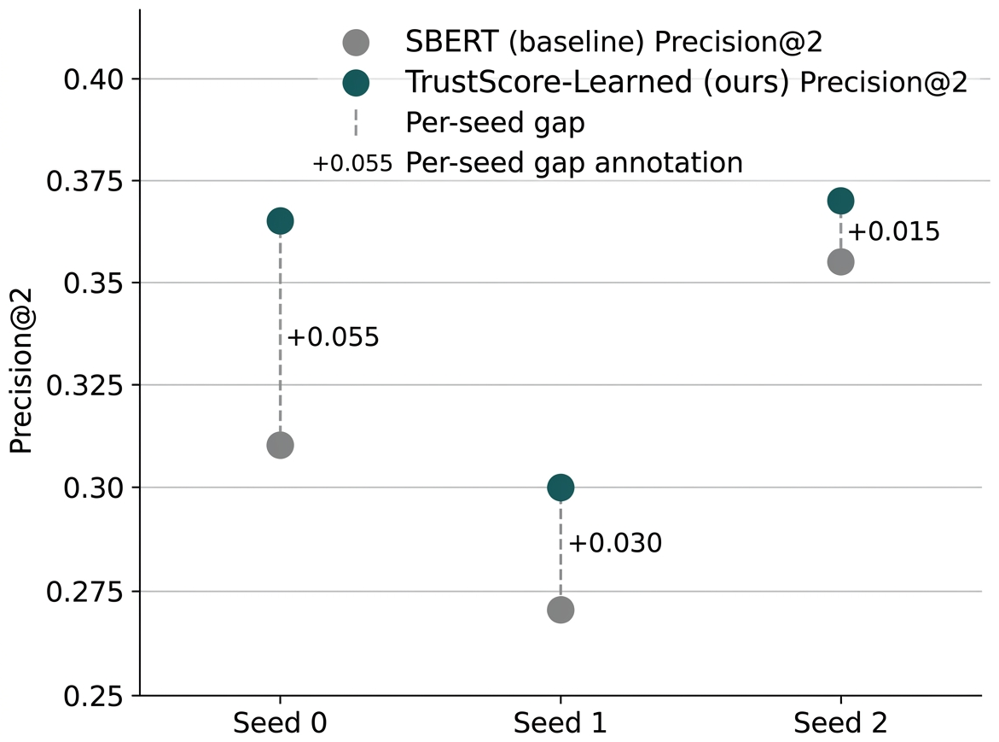

Six trust signals, a learned combiner, and a sign-flip hiding in every distractor-rich retrieval pipeline.
Most retrieval-augmented systems score candidate passages with a single relevance number. A richer view of trust would combine relevance, authority, and cross-source consistency. We ask whether that textbook intuition is empirically correct on HotpotQA's distractor setting, where each question comes with ten candidate paragraphs (two gold, eight distractors). A six-feature logistic regression fit on only 100 training questions per seed beats SBERT by +3.3 Precision@2 points, and the fitted weights reveal that two of the three classical trust heuristics — paragraph length and cross-paragraph consistency — are learned as anti-signals.
Author
Vikash Chandra Mishra
Primary metric
Precision@2
Result
0.345 ± 0.032
Seeds
3 (all positive)
Model
6-feature LogReg
Dataset
HotpotQA distractor
Training questions
100 / seed
Test questions
200 / seed
License
MIT
01 Abstract
Retrieval-augmented language models increasingly depend on a pool of heterogeneous candidate passages, and the correctness of a grounded answer hinges on which passages enter the context window. Most systems collapse this selection to a single relevance score, yet a classical view of trust decomposes into several orthogonal dimensions; on HotpotQA's distractor setting we can directly measure three of them: relevance to the query, an intrinsic authority proxy, and corroboration across independent candidate passages. We compare a naive uniform average of three trust signals against a six-feature logistic regression fit on only 100 questions per seed. The learned combiner attains Precision@2 of 0.345 ± 0.032, a 3.3 absolute-point improvement over the strongest single-signal baseline SBERT at 0.312 ± 0.035, with the gap consistent on every seed; the gold-versus-distractor score gap more than doubles, from 0.170 to 0.349. The uniform average instead collapses to 0.080, below BM25. Inspecting the fitted weights diagnoses why: paragraph length and cross-paragraph consistency are learned as anti-signals, because distractors are length-matched to gold and topically close enough that cross-source similarity peaks among distractors rather than among the gold pair. In distractor-rich retrieval, the classical trust heuristics are correct in prior but wrong in sign, and supervised calibration over only 100 questions per seed is sufficient to recover them.
02 What this paper contributes
01
A 6-signal trust scorer, runnable on CPU
We formalize paragraph-level trust-aware context selection as a per-candidate scoring problem over six orthogonal signals covering relevance, authority, and consistency, and release them as a drop-in feature bank.
02
+3.3 Precision@2 over SBERT with 100 training questions
A logistic regression over 6 normalized features, trained on only 100 supervised questions per seed, beats the strongest single-signal baseline and more than doubles the gold-versus-distractor score gap. The gain has consistent sign on every seed.
03
A previously-undiagnosed sign-flip
In HotpotQA's distractor pool, two of the three signals that textbook intuition would combine with positive weight — paragraph length and cross-paragraph consistency — are learned with negative weight. The naive uniform average collapses to 0.080, below BM25.
Each signal is min-max normalized within the candidate pool of its own question. A logistic regression over the six-dimensional feature vector produces a scalar trust score; the top-2 paragraphs are selected.
03
100 supervised questions per seed
Each random seed gets a disjoint 100-question training split and a 200-question held-out test split. The classifier is refit from scratch per seed; no trust weight has ever seen a question on which its Precision@2 is reported.

Figure 1 — Trust-aware paragraph selection. Ten candidate paragraphs are scored by six per-paragraph signals spanning relevance (teal), authority proxies (coral), and cross-paragraph consistency (olive). A six-feature logistic regression combines the per-candidate feature vector into a scalar trust score; the top-2 paragraphs are selected.
04 What we found
0.345 ± 0.032Precision@2 of Learned-TrustScore on HotpotQA distractor (3 seeds, 200 held-out questions per seed)
Across three seeds, Learned-TrustScore attains Precision@2 0.345 ± 0.032, a 3.3 absolute-point improvement over the strongest single-signal baseline SBERT at 0.312 ± 0.035. The sign of the gap is consistent across all three seeds (0.365 vs 0.310, 0.300 vs 0.270, 0.370 vs 0.355), evidence that the improvement is not a seed-lottery artifact. Paragraph F1 improves from 0.613 to 0.643 and supporting-fact F1 from 0.356 to 0.383. More tellingly, the gold-versus-distractor mean score gap more than doubles, from 0.170 to 0.349 — Learned-TrustScore is not just a better ranker but a better-calibrated confidence source.

Figure 2 — Precision@2 on HotpotQA distractor, means ± 1 population std over 3 seeds. TrustScore-Learned leads every baseline; TrustScore-Uniform (coral, ablation) collapses to 0.080, below BM25.

Figure 3 — Fitted Learned-TrustScore weights, averaged across 3 seeds. Positive weights (teal) contribute toward gold; negative weights (coral) are learned as anti-signals. Paragraph length and cross-paragraph consistency flip negative because HotpotQA distractors are length-matched to gold and topically close enough that consistency peaks among distractors rather than gold.

Figure 4 — Gold-versus-distractor score gap. Learned-TrustScore separates gold from distractor by 0.349, more than double SBERT's 0.170; the uniform ablation lands at 0.072. A wider score gap translates to a more reliable confidence signal for downstream trust-aware selection.
05 Why the sign-flip happens
HotpotQA constructs each question's ten-candidate pool by sampling two gold Wikipedia paragraphs plus eight distractors drawn from topically adjacent entities. Two benchmark-construction choices drive the anti-signal finding: (a) distractors are length-matched to gold, so paragraph length carries no discriminative authority signal; (b) distractors are sampled to be topically close to the query, inflating their cross-paragraph similarity above that of the true gold pair. An uncritical application of textbook trust heuristics would import these two features with positive sign; supervised calibration over only 100 examples reverses them. We flag as open whether the sign-flip generalizes to other distractor-rich pipelines (FEVER, RGB, MuSiQue) or is specific to HotpotQA's construction.

Figure 5 — Per-seed Precision@2 for SBERT (grey) and Learned-TrustScore (dark teal). Learned-TrustScore exceeds SBERT on every seed; the mean 3.3-point gain is not a seed-lottery artifact.